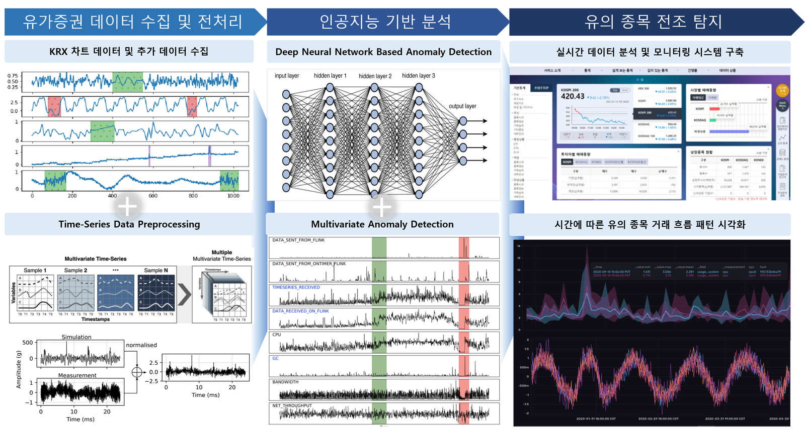

[Completed] 인공지능 기반 유가증권 유의종목 전조 탐지 솔루션
연구책임자 / 2024.04.01 ~ 2024.09.30 / 주식회사 온클레브 (KRW 33 million)
인공지능 기반 유가증권 유의종목 전조 탐지 기술 연구 (AI-based Technology for Identifying Early Signs of Cautious Investment in Securities)기간: 2024.04. ~ 2024.09.
Funding: ONCLEV (KRW 33 million)
유가증권은 자본증권의 성격을 갖는 증권, 증서 및 이와 유사하거나 관련된 것을 의미합니다. 투자유의종목은 투기적이거나 불공정거래 가능성이 있는 종목, 또는 주가가 비정상적으로 급등한 종목을 경고하기 위해 지정되는 종목입니다. 한국거래소 시장감시위원회에 따르면 2023년 불공정거래 97건이 발생해 약 7,663억 원의 부당이득이 발생했습니다. 이에 따라 한국거래소는 주식시장의 안전성과 투자자 보호를 위해 빠르고 정확한 투자유의종목 탐지 및 선별의 중요성을 강조했습니다. 본 프로젝트는 유가증권 유의종목 전조 탐지 솔루션을 개발하는 것을 목표로 합니다. 기존의 유가증권 히스토리 데이터를 기반으로 훈련된 인공지능 모듈을 사용하여 전조증세의 패턴을 파악하고, 실시간 주식 데이터를 분석해 유의종목을 사전에 탐지하는 기술을 개발하고자 합니다.
English Summary:
Securities refer to financial instruments such as stocks, bonds, and related certificates. Investment warning stocks are identified by market alert systems as potentially speculative, involved in unfair trading, or experiencing abnormal price surges. According to the Korea Exchange (KRX), there were 97 cases of unfair trading in 2023, resulting in approximately 766.3 billion KRW in illicit gains. In response, KRX has emphasized the importance of swiftly and accurately detecting such stocks to ensure market stability and protect investors. This project aims to develop a solution for detecting early signs of investment warning stocks. By leveraging historical securities data and training an AI module to recognize patterns indicative of potential warning stock designation, we seek to analyze real-time stock data to preemptively identify these stocks.
